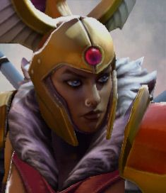

Top 3 useless hero in dota 2
Very usefull information for beginner players
Silencer

Nortrom, the Silencer, is a ranged intelligence hero who can be played as a support, carry, or initiator. He is one of the few intelligence heroes that truly benefit from intelligence items and is effective against heroes that rely mostly on spells, as he can silence them while stealing their intelligence and adding it to his own. He is a notorious anti-caster hero who can disrupt the magical abilities of his enemies and cripple spellcasters throughout the game. Arcane Curse slows and causes enemies to lose health for a set duration, but increases with each spell the enemy casts, forcing them to either wait and cast no spell until it expires, or cast spells and prolong the debuff and thus take more damage. Last Word places a curse on Nortrom's target that damages and silences for a long duration if the target casts a spell. If the target does not cast a spell before the curse duration ends the effects are the same. Glaives of Wisdom is an active attack modifier that deals a percentage of Nortrom's intelligence as pure damage, as well as steal intelligence with every attack. On top of that, the glaives also allow him to permanently steal the intelligence of enemy heroes that die near him or are directly killed by him, adding it to his own. This rewards his presence in teamfights, also making his glaives ever stronger as the battle goes on. Nortrom's ultimate, Global Silence, silences all enemy units on the map for a few seconds. A well-timed Global Silence can be used to save yourself or an ally, initiate a teamfight, or ruin the enemy's initiation.
Rubick

Rubick, the Grand Magus, is a ranged intelligence hero best known for his ability to copy the spells of his enemies and use them as his own. Although he is mostly played as a support and is extremely fragile the entire length of the game, he can still prove to be one of the most influential heroes if he utilizes good positioning and well-timed usage of his ultimate, Spell Steal. Spell Steal allows Rubick to cast an enemy hero's most recently used spell, giving him supreme versatility throughout the game. By stealing the right abilities, the Grand Magus can aid himself and allies by casting crippling disables, applying curses, unleashing powerful nukes, disorienting the enemy team, supporting his allies with buffs, escaping from rough situations, or even enhancing his own physical attacks. His other abilities are just as worthy of a Magus: Telekinesis lets Rubick magically lift an enemy into the air, rendering the target helpless and vulnerable, before hurling the lifted enemy to the ground up to a short distance away and stunning nearby foes on impact. Fade Bolt blasts enemies with a stream of arcane energy which bounces to all enemies nearby, dealing damage and reducing their attack damage. Arcane Supremacy is a passive ability, which amplifies the spell damage and debuffs of Rubick's spells, both his and the ones he's stolen. Rubick's versatile ability-set and his infamous Spell Steal make him a flexible and powerful hero that can work in any lineup although he does suffer from long cooldowns and the surfacing predictability of his ultimate.
Legion
Legion Commander is a melee hero whose main stat is Strength attribute symbol.png strength. Her first ability, Overwhelming Odds, turns enemies' quantitative advantage against themselves, damaging them and granting you additional movement speed per creature or hero. Deals additional damage to illusions and summoned units as a percentage of their current health. The hero's second ability, Press the Attack, removes all negative effects from a friendly target and adds attack speed and health regeneration for a short time. Passive ability, Moment of Courage, when attacked, gives the hero a passive chance to strike back and restore some of his health. The ultimate ability, Duel, challenges the hero to a duel for a short amount of time. Legion Commander and the hero cannot use abilities or items. If one of the duelists dies while the ability is active, the winner of the duel will receive a permanent bonus to damage. When you purchase Aghanim's Scepter icon.png Aghanim's Scepter in a duel, you are immune to all damage, except for the damage inflicted by the enemy duel, and you also gain magical immunity during the duel.Legion Commander and the hero cannot use abilities or items. If one of the duelists dies while the ability is active, the winner of the duel will receive a permanent bonus to damage. When you purchase Aghanim's Scepter icon.png Aghanim's Scepter in a duel, you are immune to all damage, except for the damage inflicted by the enemy duel, and you also gain magical immunity during the duel.